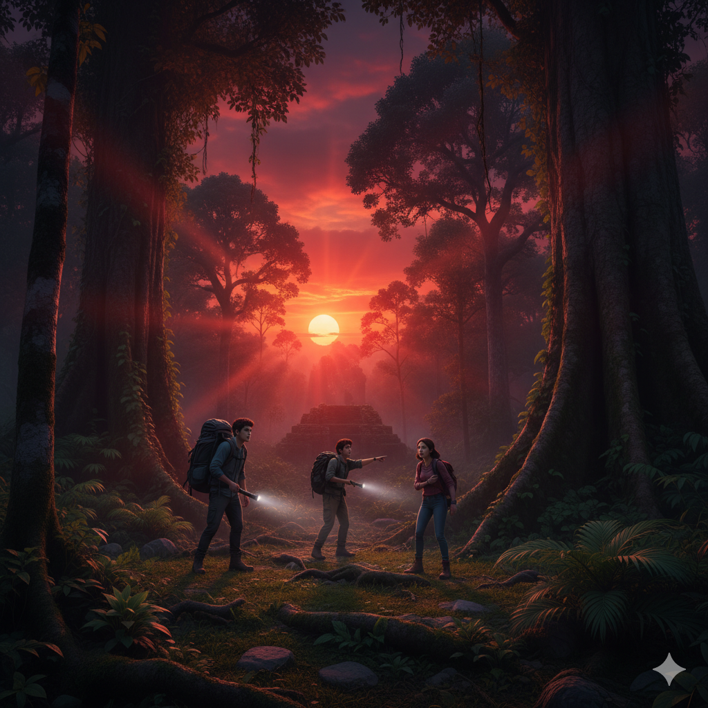
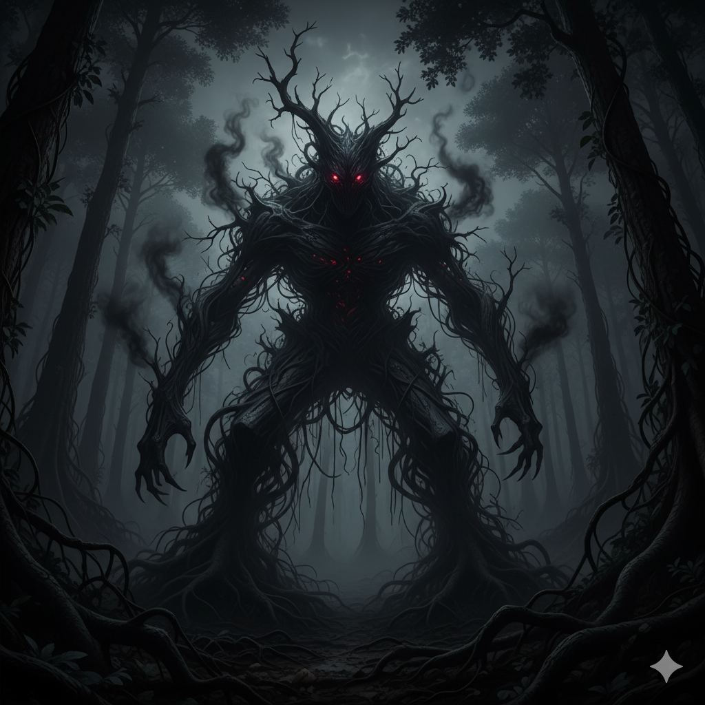
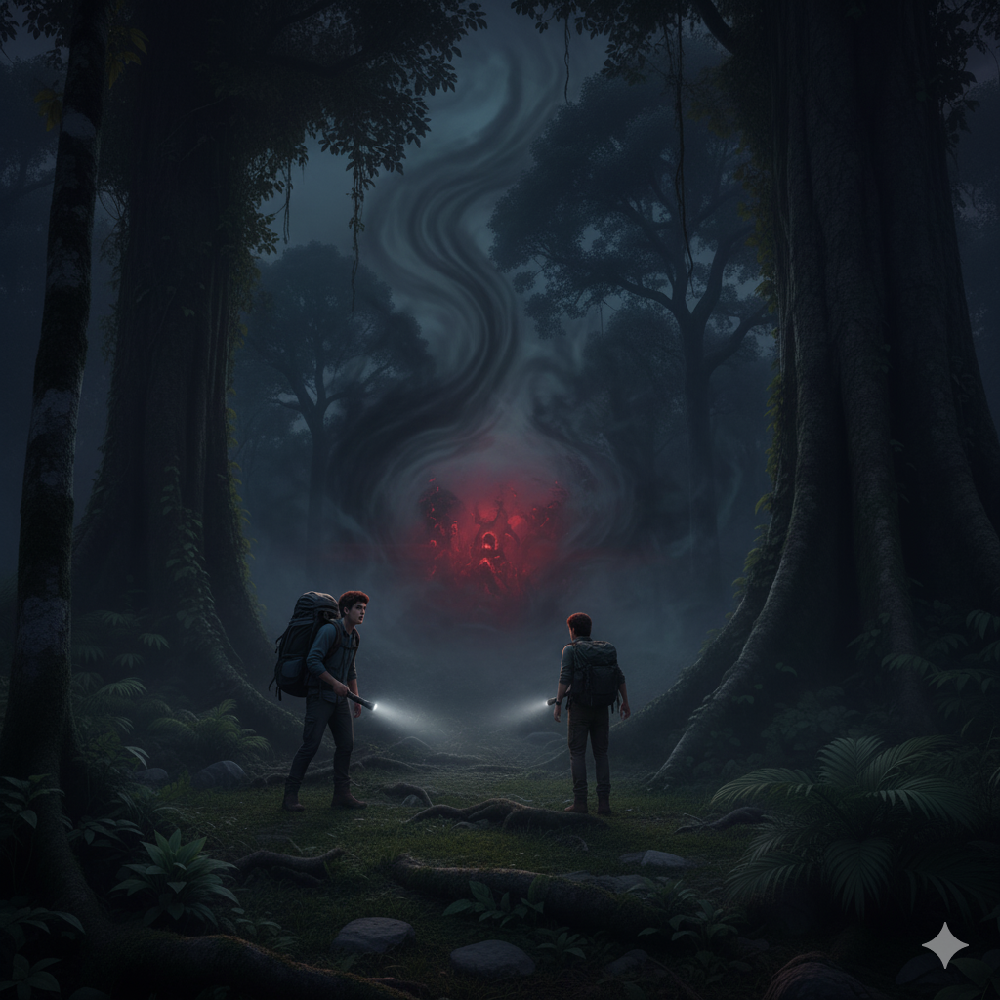
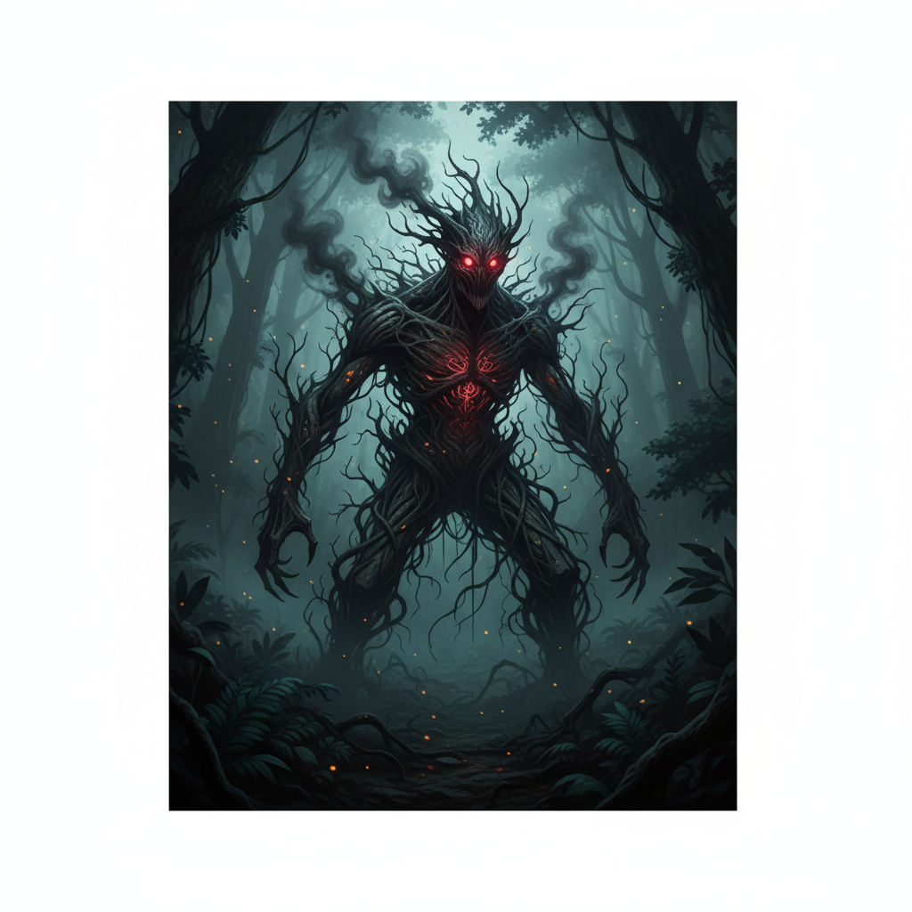
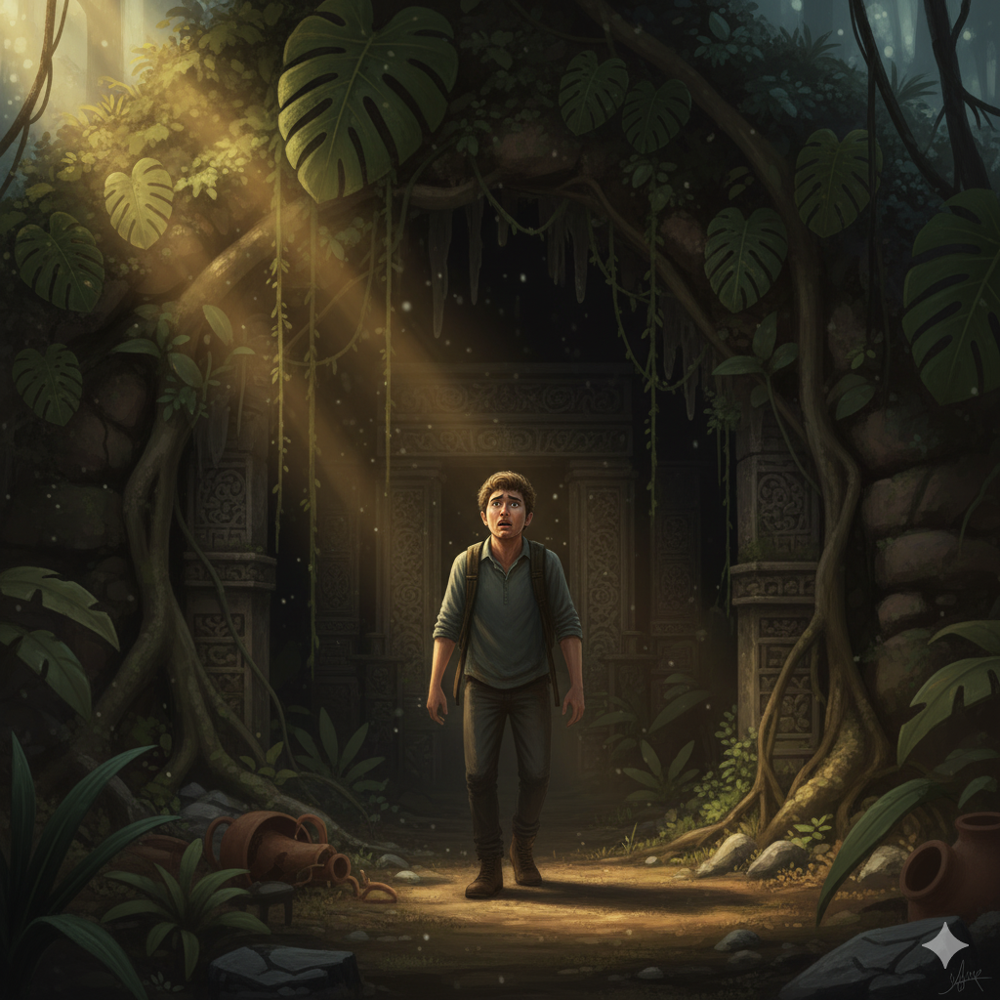
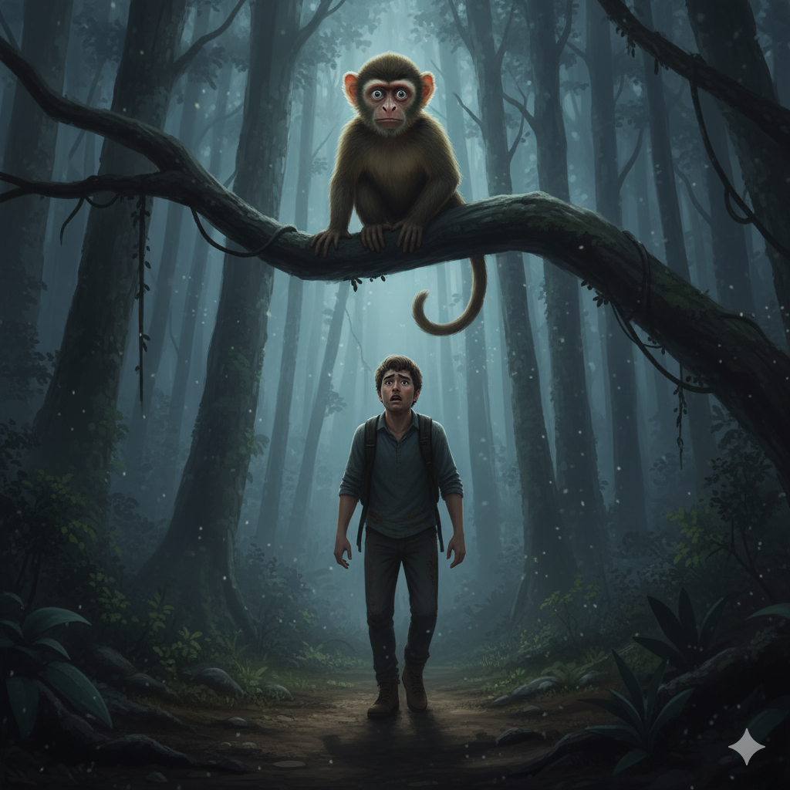
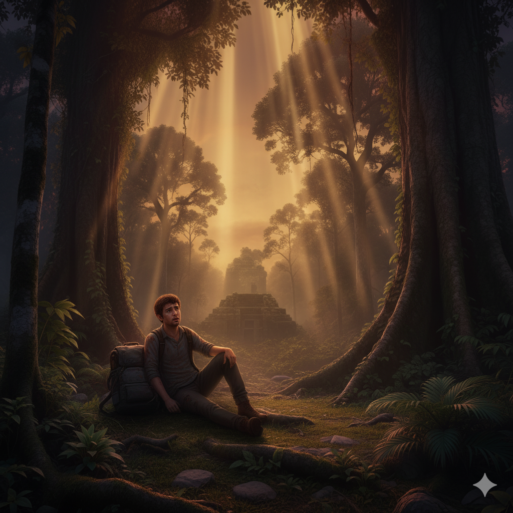

Un guion de terror y misterio
Javier y sus amigos, Carlos y María, se habían metido demasiado adentro en el monte.
Maria: —Deberíamos volver, es la zona del pueblo Movima... escucha (susurró)... deberíamos irnos.
Carlos: —Solo un poco más. Quiero encontrar esas viejas ruinas que dicen que existen.

...una masa sin forma y enredada, como un árbol muerto que se movía.
Era el Canibaba Kilmo, el que se "come" cosas.

Carlos regresó corriendo, sin aire y con los ojos muy abiertos. Empujó a Javier con mucha fuerza:
—¡Huye! ¡Nos va a... consumir!


Dibujo 1: Muestra a una figura oscura (el Kilmo) comiendo palabras y dibujos.

Dibujo 2: Muestra a un antiguo pueblo Movima haciendo un gran ritual.

Dibujo 3: Muestra al Canibaba siendo encerrado en esta misma cueva por la gente sabia del pueblo.

El Descubrimiento: Javier se para frente a una piedra redonda rota. Los dibujos de cierre están borrados.
El Canibaba Kilmo no es solo un cuento. Es algo que se escapó hace poco de su cárcel en estas ruinas bolivianas, y por eso sus amigos se perdieron.— Continuará...